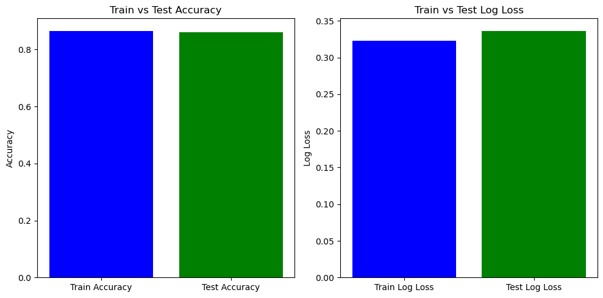

c:\Users\srinivas\anaconda3\Lib\site-packages\torch\_functorch\deprecated.py:61: UserWarning: We've integrated functorch into PyTorch. As the final step of the integration, functorch.vmap is deprecated as of PyTorch 2.0 and will be deleted in a future version of PyTorch >= 2.3. Please use torch.vmap instead; see the PyTorch 2.0 release notes and/or the torch.func migration guide for more details https://pytorch.org/docs/master/func.migrating.html
warn_deprecated('vmap', 'torch.vmap')
from sklearn.model_selection import train_test_split
sens_ind =0sens_attr = dataset_orig_panel19_train.protected_attribute_names[sens_ind]unprivileged_groups = [{sens_attr: v} for v in dataset_orig_panel19_train.unprivileged_protected_attributes[sens_ind]]privileged_groups = [{sens_attr: v} for v in dataset_orig_panel19_train.privileged_protected_attributes[sens_ind]]
['Mean difference (mean label value on unprivileged instances - mean label value on privileged instances): -0.13507447726478142',
'Consistency (Zemel, et al. 2013): [0.83665193]',
'Statistical parity difference (probability of favorable outcome for unprivileged instances - probability of favorable outcome for privileged instances): -0.13507447726478142',
'Disparate impact (probability of favorable outcome for unprivileged instances / probability of favorable outcome for privileged instances): 0.49826823461176517']
['Mean difference (mean label value on unprivileged instances - mean label value on privileged instances): -2.7755575615628914e-17',
'Consistency (Zemel, et al. 2013): [0.83665193]',
'Statistical parity difference (probability of favorable outcome for unprivileged instances - probability of favorable outcome for privileged instances): -2.7755575615628914e-17',
'Disparate impact (probability of favorable outcome for unprivileged instances / probability of favorable outcome for privileged instances): 0.9999999999999999']
test_results
['Mean difference (mean label value on unprivileged instances - mean label value on privileged instances): -0.13507447726478142',
'Consistency (Zemel, et al. 2013): [0.83665193]',
'Statistical parity difference (probability of favorable outcome for unprivileged instances - probability of favorable outcome for privileged instances): -0.13507447726478142',
'Disparate impact (probability of favorable outcome for unprivileged instances / probability of favorable outcome for privileged instances): 0.49826823461176517']
test_results_rw
['Mean difference (mean label value on unprivileged instances - mean label value on privileged instances): -2.7755575615628914e-17',
'Consistency (Zemel, et al. 2013): [0.83665193]',
'Statistical parity difference (probability of favorable outcome for unprivileged instances - probability of favorable outcome for privileged instances): -2.7755575615628914e-17',
'Disparate impact (probability of favorable outcome for unprivileged instances / probability of favorable outcome for privileged instances): 0.9999999999999999']
features = dataset_transf_panel19_train_rw.featureslabel = dataset_transf_panel19_train_rw.labels.ravel() # Flatten the label array if necessaryweights = dataset_transf_panel19_train_rw.instance_weightsfeature_names = dataset_transf_panel19_train_rw.feature_namesdf_rw = pd.DataFrame(features, columns=feature_names)df_rw['label'] = labeldf_rw['weights'] = weights
import pandas as pdimport matplotlib.pyplot as pltfrom sklearn.linear_model import LogisticRegressionfrom sklearn.model_selection import train_test_splitfrom sklearn.metrics import accuracy_score, log_loss# Assuming 'df' is your Pandas DataFrame with features, 'label', and 'weights' columnsdf=dataset_orig_panel19_train_df# Split the DataFrame into features, labels, and weightsX = df.drop(['label'], axis=1)y = df['label']# Split the data into training and testing setsX_train, X_test, y_train, y_test = train_test_split(X, y, test_size=0.2, random_state=42)# Initialize the modelmodel = LogisticRegression()# Train the model using the sample_weight parameter# We need to extract the corresponding weights for the training samplestrain_indices = X_train.index# train_weights = weights[train_indices]model.fit(X_train, y_train)# Predictionsy_train_pred = model.predict(X_train)y_test_pred = model.predict(X_test)# Probability predictions for log loss calculationy_train_pred_proba = model.predict_proba(X_train)y_test_pred_proba = model.predict_proba(X_test)# Calculate accuracytrain_accuracy = accuracy_score(y_train, y_train_pred)test_accuracy = accuracy_score(y_test, y_test_pred)# Calculate log losstrain_loss = log_loss(y_train, y_train_pred_proba)test_loss = log_loss(y_test, y_test_pred_proba)# Print errors and lossesprint(f"Training Accuracy: {train_accuracy}, Training Log Loss: {train_loss}")print(f"Testing Accuracy: {test_accuracy}, Testing Log Loss: {test_loss}")# Plottingplt.figure(figsize=(10, 5))# Accuracy plotplt.subplot(1, 2, 1)plt.bar(['Train Accuracy', 'Test Accuracy'], [train_accuracy, test_accuracy], color=['blue', 'green'])plt.ylabel('Accuracy')plt.title('Train vs Test Accuracy')# Log Loss plotplt.subplot(1, 2, 2)plt.bar(['Train Log Loss', 'Test Log Loss'], [train_loss, test_loss], color=['blue', 'green'])plt.ylabel('Log Loss')plt.title('Train vs Test Log Loss')plt.tight_layout()plt.show()
c:\Users\srinivas\anaconda3\Lib\site-packages\sklearn\linear_model\_logistic.py:469: ConvergenceWarning: lbfgs failed to converge (status=1):
STOP: TOTAL NO. of ITERATIONS REACHED LIMIT.
Increase the number of iterations (max_iter) or scale the data as shown in:
https://scikit-learn.org/stable/modules/preprocessing.html
Please also refer to the documentation for alternative solver options:
https://scikit-learn.org/stable/modules/linear_model.html#logistic-regression
n_iter_i = _check_optimize_result(
Training Accuracy: 0.8654453569172458, Training Log Loss: 0.3231973192817746
Testing Accuracy: 0.8597599494630449, Testing Log Loss: 0.33654418113825585

import pandas as pdimport plotly.graph_objects as gofrom sklearn.linear_model import LogisticRegressionfrom sklearn.model_selection import train_test_splitfrom sklearn.metrics import accuracy_score, log_loss, confusion_matriximport plotly.figure_factory as ff# Assuming 'df' is your Pandas DataFrame with features and 'label' columnsdf = dataset_orig_panel19_train_df # Replace with your actual DataFrame# Split the DataFrame into features and labelsX = df.drop(['label'], axis=1)y = df['label']# Split the data into training and testing setsX_train, X_test, y_train, y_test = train_test_split(X, y, test_size=0.2, random_state=42)# Initialize the modelmodel = LogisticRegression()# Train the modelmodel.fit(X_train, y_train)# Predictionsy_train_pred = model.predict(X_train)y_test_pred = model.predict(X_test)# Probability predictions for log loss calculationy_train_pred_proba = model.predict_proba(X_train)y_test_pred_proba = model.predict_proba(X_test)# Calculate accuracy and log losstrain_accuracy = accuracy_score(y_train, y_train_pred)test_accuracy = accuracy_score(y_test, y_test_pred)train_loss = log_loss(y_train, y_train_pred_proba)test_loss = log_loss(y_test, y_test_pred_proba)# Generate confusion matrix for test datacm = confusion_matrix(y_test, y_test_pred)cm_figure = ff.create_annotated_heatmap(z=cm, x=['Predicted Negative', 'Predicted Positive'], y=['Actual Negative', 'Actual Positive'], colorscale='Viridis')# Bar graph for accuracyaccuracy_fig = go.Figure()accuracy_fig.add_trace(go.Bar(x=['Train Accuracy', 'Test Accuracy'], y=[train_accuracy, test_accuracy], marker_color=['blue', 'green'], text=[f"{train_accuracy:.2%}", f"{test_accuracy:.2%}"], textposition='auto'))accuracy_fig.update_layout(title='Train vs Test Accuracy', xaxis_title='Dataset', yaxis_title='Accuracy', template='plotly_dark', showlegend=False)# Bar graph for log lossloss_fig = go.Figure()loss_fig.add_trace(go.Bar(x=['Train Log Loss', 'Test Log Loss'], y=[train_loss, test_loss], marker_color=['blue', 'green'], text=[f"{train_loss:.4f}", f"{test_loss:.4f}"], textposition='auto'))loss_fig.update_layout(title='Train vs Test Log Loss', xaxis_title='Dataset', yaxis_title='Log Loss', template='plotly_dark', showlegend=False)# Show plotsaccuracy_fig.show()loss_fig.show()cm_figure.show()
c:\Users\srinivas\anaconda3\Lib\site-packages\sklearn\linear_model\_logistic.py:469: ConvergenceWarning:
lbfgs failed to converge (status=1):
STOP: TOTAL NO. of ITERATIONS REACHED LIMIT.
Increase the number of iterations (max_iter) or scale the data as shown in:
https://scikit-learn.org/stable/modules/preprocessing.html
Please also refer to the documentation for alternative solver options:
https://scikit-learn.org/stable/modules/linear_model.html#logistic-regression
Unable to display output for mime type(s): application/vnd.plotly.v1+json
Unable to display output for mime type(s): application/vnd.plotly.v1+json
Unable to display output for mime type(s): application/vnd.plotly.v1+json
import pandas as pdimport matplotlib.pyplot as pltfrom sklearn.linear_model import LogisticRegressionfrom sklearn.model_selection import train_test_splitfrom sklearn.metrics import accuracy_score, log_loss# Assuming 'df' is your Pandas DataFrame with features, 'label', and 'weights' columns# Split the DataFrame into features, labels, and weightsX = df_rw.drop(['label', 'weights'], axis=1)y = df_rw['label']weights = df_rw['weights']# Split the data into training and testing setsX_train, X_test, y_train, y_test = train_test_split(X, y, test_size=0.2, random_state=42)# Initialize the modelmodel_rw = LogisticRegression()# Train the model using the sample_weight parameter# We need to extract the corresponding weights for the training samplestrain_indices = X_train.indextrain_weights = weights[train_indices]model_rw.fit(X_train, y_train, sample_weight=train_weights)# Predictionsy_train_pred = model_rw.predict(X_train)y_test_pred = model_rw.predict(X_test)# Probability predictions for log loss calculationy_train_pred_proba = model_rw.predict_proba(X_train)y_test_pred_proba = model_rw.predict_proba(X_test)# Calculate accuracytrain_accuracy = accuracy_score(y_train, y_train_pred)test_accuracy = accuracy_score(y_test, y_test_pred)# Calculate log losstrain_loss = log_loss(y_train, y_train_pred_proba)test_loss = log_loss(y_test, y_test_pred_proba)# Print errors and lossesprint(f"Training Accuracy: {train_accuracy}, Training Log Loss: {train_loss}")print(f"Testing Accuracy: {test_accuracy}, Testing Log Loss: {test_loss}")# Plottingplt.figure(figsize=(10, 5))# Accuracy plotplt.subplot(1, 2, 1)plt.bar(['Train Accuracy', 'Test Accuracy'], [train_accuracy, test_accuracy], color=['blue', 'green'])plt.ylabel('Accuracy')plt.title('Train vs Test Accuracy')# Log Loss plotplt.subplot(1, 2, 2)plt.bar(['Train Log Loss', 'Test Log Loss'], [train_loss, test_loss], color=['blue', 'green'])plt.ylabel('Log Loss')plt.title('Train vs Test Log Loss')plt.tight_layout()plt.show()
---------------------------------------------------------------------------KeyError Traceback (most recent call last)
File c:\Users\srinivas\anaconda3\Lib\site-packages\pandas\core\indexes\base.py:3653, in Index.get_loc(self, key) 3652try:
-> 3653returnself._engine.get_loc(casted_key)
3654exceptKeyErroras err:
File c:\Users\srinivas\anaconda3\Lib\site-packages\pandas\_libs\index.pyx:147, in pandas._libs.index.IndexEngine.get_loc()
File c:\Users\srinivas\anaconda3\Lib\site-packages\pandas\_libs\index.pyx:176, in pandas._libs.index.IndexEngine.get_loc()
File pandas\_libs\hashtable_class_helper.pxi:7080, in pandas._libs.hashtable.PyObjectHashTable.get_item()
File pandas\_libs\hashtable_class_helper.pxi:7088, in pandas._libs.hashtable.PyObjectHashTable.get_item()KeyError: 'weights'
The above exception was the direct cause of the following exception:
KeyError Traceback (most recent call last)
Cell In[26], line 13 11 X = df_rw.drop(['label'], axis=1)
12 y = df_rw['label']
---> 13 weights = df['weights'] # Make sure this is the correct column for weights 15# Split the data into training and testing sets 16 X_train, X_test, y_train, y_test = train_test_split(X, y, test_size=0.2, random_state=42)
File c:\Users\srinivas\anaconda3\Lib\site-packages\pandas\core\frame.py:3761, in DataFrame.__getitem__(self, key) 3759ifself.columns.nlevels >1:
3760returnself._getitem_multilevel(key)
-> 3761 indexer =self.columns.get_loc(key)
3762if is_integer(indexer):
3763 indexer = [indexer]
File c:\Users\srinivas\anaconda3\Lib\site-packages\pandas\core\indexes\base.py:3655, in Index.get_loc(self, key) 3653returnself._engine.get_loc(casted_key)
3654exceptKeyErroras err:
-> 3655raiseKeyError(key) fromerr 3656exceptTypeError:
3657# If we have a listlike key, _check_indexing_error will raise 3658# InvalidIndexError. Otherwise we fall through and re-raise 3659# the TypeError. 3660self._check_indexing_error(key)
KeyError: 'weights'